Chapter 26 Trees
Chapter Status: This chapter was originally written using the tree packages. Currently being re-written to exclusively use the rpart package which seems more widely suggested and provides better plotting features.
library(tree)In this document, we will use the package tree for both classification and regression trees. Note that there are many packages to do this in R. rpart may be the most common, however, we will use tree for simplicity.
26.1 Classification Trees
library(ISLR)To understand classification trees, we will use the Carseat dataset from the ISLR package. We will first modify the response variable Sales from its original use as a numerical variable, to a categorical variable with High for high sales, and Low for low sales.
data(Carseats)
#?Carseats
str(Carseats)## 'data.frame': 400 obs. of 11 variables:
## $ Sales : num 9.5 11.22 10.06 7.4 4.15 ...
## $ CompPrice : num 138 111 113 117 141 124 115 136 132 132 ...
## $ Income : num 73 48 35 100 64 113 105 81 110 113 ...
## $ Advertising: num 11 16 10 4 3 13 0 15 0 0 ...
## $ Population : num 276 260 269 466 340 501 45 425 108 131 ...
## $ Price : num 120 83 80 97 128 72 108 120 124 124 ...
## $ ShelveLoc : Factor w/ 3 levels "Bad","Good","Medium": 1 2 3 3 1 1 3 2 3 3 ...
## $ Age : num 42 65 59 55 38 78 71 67 76 76 ...
## $ Education : num 17 10 12 14 13 16 15 10 10 17 ...
## $ Urban : Factor w/ 2 levels "No","Yes": 2 2 2 2 2 1 2 2 1 1 ...
## $ US : Factor w/ 2 levels "No","Yes": 2 2 2 2 1 2 1 2 1 2 ...Carseats$Sales = as.factor(ifelse(Carseats$Sales <= 8, "Low", "High"))
str(Carseats)## 'data.frame': 400 obs. of 11 variables:
## $ Sales : Factor w/ 2 levels "High","Low": 1 1 1 2 2 1 2 1 2 2 ...
## $ CompPrice : num 138 111 113 117 141 124 115 136 132 132 ...
## $ Income : num 73 48 35 100 64 113 105 81 110 113 ...
## $ Advertising: num 11 16 10 4 3 13 0 15 0 0 ...
## $ Population : num 276 260 269 466 340 501 45 425 108 131 ...
## $ Price : num 120 83 80 97 128 72 108 120 124 124 ...
## $ ShelveLoc : Factor w/ 3 levels "Bad","Good","Medium": 1 2 3 3 1 1 3 2 3 3 ...
## $ Age : num 42 65 59 55 38 78 71 67 76 76 ...
## $ Education : num 17 10 12 14 13 16 15 10 10 17 ...
## $ Urban : Factor w/ 2 levels "No","Yes": 2 2 2 2 2 1 2 2 1 1 ...
## $ US : Factor w/ 2 levels "No","Yes": 2 2 2 2 1 2 1 2 1 2 ...We first fit an unpruned classification tree using all of the predictors. Details of this process can be found using ?tree and ?tree.control
seat_tree = tree(Sales ~ ., data = Carseats)
# seat_tree = tree(Sales ~ ., data = Carseats,
# control = tree.control(nobs = nrow(Carseats), minsize = 10))
summary(seat_tree)##
## Classification tree:
## tree(formula = Sales ~ ., data = Carseats)
## Variables actually used in tree construction:
## [1] "ShelveLoc" "Price" "US" "Income" "CompPrice"
## [6] "Population" "Advertising" "Age"
## Number of terminal nodes: 27
## Residual mean deviance: 0.4575 = 170.7 / 373
## Misclassification error rate: 0.09 = 36 / 400We see this tree has 27 terminal nodes and a misclassification rate of 0.09.
plot(seat_tree)
text(seat_tree, pretty = 0)
title(main = "Unpruned Classification Tree")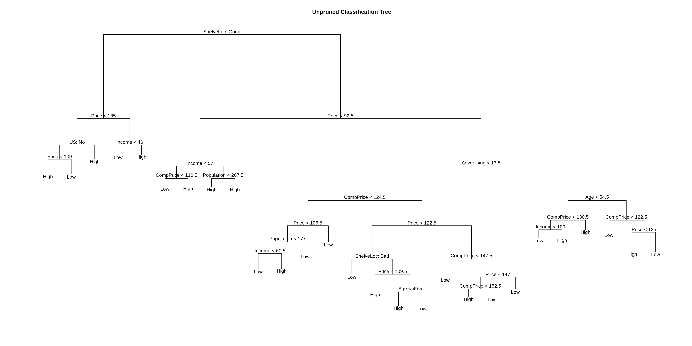
Above we plot the tree. Below we output the details of the splits.
seat_tree## node), split, n, deviance, yval, (yprob)
## * denotes terminal node
##
## 1) root 400 541.500 Low ( 0.41000 0.59000 )
## 2) ShelveLoc: Good 85 90.330 High ( 0.77647 0.22353 )
## 4) Price < 135 68 49.260 High ( 0.88235 0.11765 )
## 8) US: No 17 22.070 High ( 0.64706 0.35294 )
## 16) Price < 109 8 0.000 High ( 1.00000 0.00000 ) *
## 17) Price > 109 9 11.460 Low ( 0.33333 0.66667 ) *
## 9) US: Yes 51 16.880 High ( 0.96078 0.03922 ) *
## 5) Price > 135 17 22.070 Low ( 0.35294 0.64706 )
## 10) Income < 46 6 0.000 Low ( 0.00000 1.00000 ) *
## 11) Income > 46 11 15.160 High ( 0.54545 0.45455 ) *
## 3) ShelveLoc: Bad,Medium 315 390.600 Low ( 0.31111 0.68889 )
## 6) Price < 92.5 46 56.530 High ( 0.69565 0.30435 )
## 12) Income < 57 10 12.220 Low ( 0.30000 0.70000 )
## 24) CompPrice < 110.5 5 0.000 Low ( 0.00000 1.00000 ) *
## 25) CompPrice > 110.5 5 6.730 High ( 0.60000 0.40000 ) *
## 13) Income > 57 36 35.470 High ( 0.80556 0.19444 )
## 26) Population < 207.5 16 21.170 High ( 0.62500 0.37500 ) *
## 27) Population > 207.5 20 7.941 High ( 0.95000 0.05000 ) *
## 7) Price > 92.5 269 299.800 Low ( 0.24535 0.75465 )
## 14) Advertising < 13.5 224 213.200 Low ( 0.18304 0.81696 )
## 28) CompPrice < 124.5 96 44.890 Low ( 0.06250 0.93750 )
## 56) Price < 106.5 38 33.150 Low ( 0.15789 0.84211 )
## 112) Population < 177 12 16.300 Low ( 0.41667 0.58333 )
## 224) Income < 60.5 6 0.000 Low ( 0.00000 1.00000 ) *
## 225) Income > 60.5 6 5.407 High ( 0.83333 0.16667 ) *
## 113) Population > 177 26 8.477 Low ( 0.03846 0.96154 ) *
## 57) Price > 106.5 58 0.000 Low ( 0.00000 1.00000 ) *
## 29) CompPrice > 124.5 128 150.200 Low ( 0.27344 0.72656 )
## 58) Price < 122.5 51 70.680 High ( 0.50980 0.49020 )
## 116) ShelveLoc: Bad 11 6.702 Low ( 0.09091 0.90909 ) *
## 117) ShelveLoc: Medium 40 52.930 High ( 0.62500 0.37500 )
## 234) Price < 109.5 16 7.481 High ( 0.93750 0.06250 ) *
## 235) Price > 109.5 24 32.600 Low ( 0.41667 0.58333 )
## 470) Age < 49.5 13 16.050 High ( 0.69231 0.30769 ) *
## 471) Age > 49.5 11 6.702 Low ( 0.09091 0.90909 ) *
## 59) Price > 122.5 77 55.540 Low ( 0.11688 0.88312 )
## 118) CompPrice < 147.5 58 17.400 Low ( 0.03448 0.96552 ) *
## 119) CompPrice > 147.5 19 25.010 Low ( 0.36842 0.63158 )
## 238) Price < 147 12 16.300 High ( 0.58333 0.41667 )
## 476) CompPrice < 152.5 7 5.742 High ( 0.85714 0.14286 ) *
## 477) CompPrice > 152.5 5 5.004 Low ( 0.20000 0.80000 ) *
## 239) Price > 147 7 0.000 Low ( 0.00000 1.00000 ) *
## 15) Advertising > 13.5 45 61.830 High ( 0.55556 0.44444 )
## 30) Age < 54.5 25 25.020 High ( 0.80000 0.20000 )
## 60) CompPrice < 130.5 14 18.250 High ( 0.64286 0.35714 )
## 120) Income < 100 9 12.370 Low ( 0.44444 0.55556 ) *
## 121) Income > 100 5 0.000 High ( 1.00000 0.00000 ) *
## 61) CompPrice > 130.5 11 0.000 High ( 1.00000 0.00000 ) *
## 31) Age > 54.5 20 22.490 Low ( 0.25000 0.75000 )
## 62) CompPrice < 122.5 10 0.000 Low ( 0.00000 1.00000 ) *
## 63) CompPrice > 122.5 10 13.860 Low ( 0.50000 0.50000 )
## 126) Price < 125 5 0.000 High ( 1.00000 0.00000 ) *
## 127) Price > 125 5 0.000 Low ( 0.00000 1.00000 ) *We now test-train split the data so we can evaluate how well our tree is working. We use 200 observations for each.
dim(Carseats)## [1] 400 11set.seed(2)
seat_idx = sample(1:nrow(Carseats), 200)
seat_trn = Carseats[seat_idx,]
seat_tst = Carseats[-seat_idx,]seat_tree = tree(Sales ~ ., data = seat_trn)summary(seat_tree)##
## Classification tree:
## tree(formula = Sales ~ ., data = seat_trn)
## Variables actually used in tree construction:
## [1] "ShelveLoc" "Price" "Population" "Advertising" "Income"
## [6] "Age" "CompPrice"
## Number of terminal nodes: 19
## Residual mean deviance: 0.4282 = 77.51 / 181
## Misclassification error rate: 0.105 = 21 / 200Note that, the tree is not using all of the available variables.
summary(seat_tree)$used## [1] ShelveLoc Price Population Advertising Income Age
## [7] CompPrice
## 11 Levels: <leaf> CompPrice Income Advertising Population ... USnames(Carseats)[which(!(names(Carseats) %in% summary(seat_tree)$used))]## [1] "Sales" "Education" "Urban" "US"Also notice that, this new tree is slightly different than the tree fit to all of the data.
plot(seat_tree)
text(seat_tree, pretty = 0)
title(main = "Unpruned Classification Tree")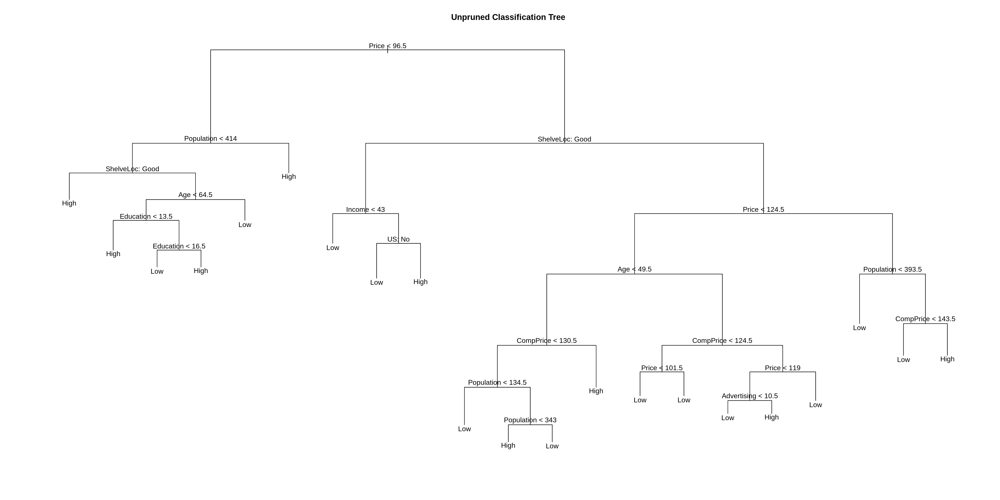
When using the predict() function on a tree, the default type is vector which gives predicted probabilities for both classes. We will use type = class to directly obtain classes. We first fit the tree using the training data (above), then obtain predictions on both the train and test set, then view the confusion matrix for both.
seat_trn_pred = predict(seat_tree, seat_trn, type = "class")
seat_tst_pred = predict(seat_tree, seat_tst, type = "class")
#predict(seat_tree, seat_trn, type = "vector")
#predict(seat_tree, seat_tst, type = "vector")# train confusion
table(predicted = seat_trn_pred, actual = seat_trn$Sales)## actual
## predicted High Low
## High 66 10
## Low 14 110# test confusion
table(predicted = seat_tst_pred, actual = seat_tst$Sales)## actual
## predicted High Low
## High 57 29
## Low 27 87accuracy = function(actual, predicted) {
mean(actual == predicted)
}# train acc
accuracy(predicted = seat_trn_pred, actual = seat_trn$Sales)## [1] 0.88# test acc
accuracy(predicted = seat_tst_pred, actual = seat_tst$Sales)## [1] 0.72Here it is easy to see that the tree has been over-fit. The train set performs much better than the test set.
We will now use cross-validation to find a tree by considering trees of different sizes which have been pruned from our original tree.
set.seed(3)
seat_tree_cv = cv.tree(seat_tree, FUN = prune.misclass)# index of tree with minimum error
min_idx = which.min(seat_tree_cv$dev)
min_idx## [1] 5# number of terminal nodes in that tree
seat_tree_cv$size[min_idx]## [1] 9# misclassification rate of each tree
seat_tree_cv$dev / length(seat_idx)## [1] 0.275 0.275 0.265 0.260 0.250 0.280 0.345 0.325 0.400par(mfrow = c(1, 2))
# default plot
plot(seat_tree_cv)
# better plot
plot(seat_tree_cv$size, seat_tree_cv$dev / nrow(seat_trn), type = "b",
xlab = "Tree Size", ylab = "CV Misclassification Rate")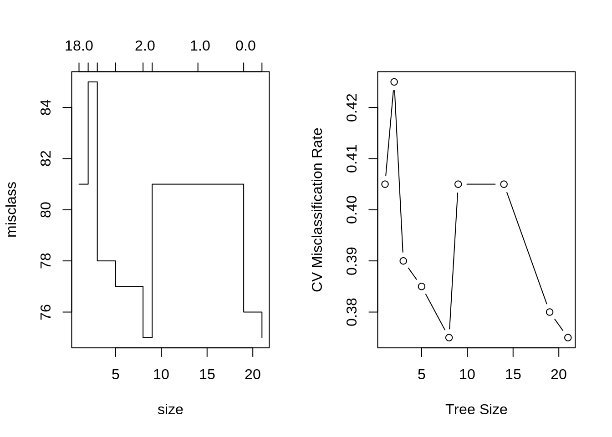
It appears that a tree of size 9 has the fewest misclassifications of the considered trees, via cross-validation.
We use prune.misclass() to obtain that tree from our original tree, and plot this smaller tree.
seat_tree_prune = prune.misclass(seat_tree, best = 9)
summary(seat_tree_prune)##
## Classification tree:
## snip.tree(tree = seat_tree, nodes = c(223L, 4L, 12L, 54L))
## Variables actually used in tree construction:
## [1] "ShelveLoc" "Price" "Advertising" "Age" "CompPrice"
## Number of terminal nodes: 9
## Residual mean deviance: 0.8103 = 154.8 / 191
## Misclassification error rate: 0.155 = 31 / 200plot(seat_tree_prune)
text(seat_tree_prune, pretty = 0)
title(main = "Pruned Classification Tree")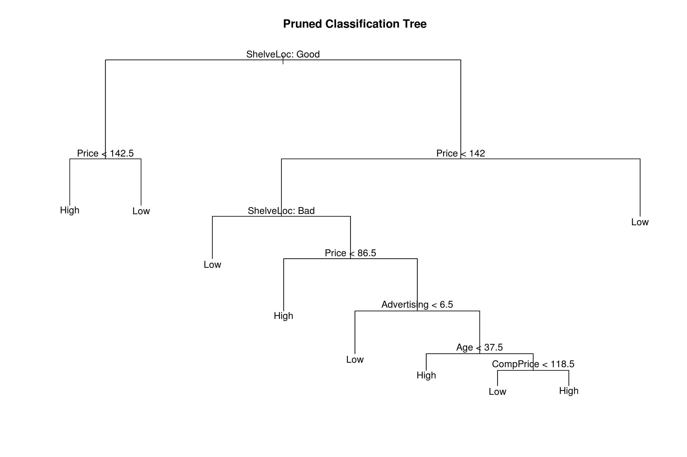
We again obtain predictions using this smaller tree, and evaluate on the test and train sets.
# train
seat_prune_trn_pred = predict(seat_tree_prune, seat_trn, type = "class")
table(predicted = seat_prune_trn_pred, actual = seat_trn$Sales)## actual
## predicted High Low
## High 59 10
## Low 21 110accuracy(predicted = seat_prune_trn_pred, actual = seat_trn$Sales)## [1] 0.845# test
seat_prune_tst_pred = predict(seat_tree_prune, seat_tst, type = "class")
table(predicted = seat_prune_tst_pred, actual = seat_tst$Sales)## actual
## predicted High Low
## High 60 22
## Low 24 94accuracy(predicted = seat_prune_tst_pred, actual = seat_tst$Sales)## [1] 0.77The train set has performed almost as well as before, and there was a small improvement in the test set, but it is still obvious that we have over-fit. Trees tend to do this. We will look at several ways to fix this, including: bagging, boosting and random forests.
26.2 Regression Trees
To demonstrate regression trees, we will use the Boston data. Recall medv is the response. We first split the data in half.
library(MASS)
set.seed(18)
boston_idx = sample(1:nrow(Boston), nrow(Boston) / 2)
boston_trn = Boston[boston_idx,]
boston_tst = Boston[-boston_idx,]Then fit an unpruned regression tree to the training data.
boston_tree = tree(medv ~ ., data = boston_trn)
summary(boston_tree)##
## Regression tree:
## tree(formula = medv ~ ., data = boston_trn)
## Variables actually used in tree construction:
## [1] "rm" "lstat" "crim"
## Number of terminal nodes: 9
## Residual mean deviance: 12.35 = 3013 / 244
## Distribution of residuals:
## Min. 1st Qu. Median Mean 3rd Qu. Max.
## -13.600 -1.832 -0.120 0.000 1.348 26.350plot(boston_tree)
text(boston_tree, pretty = 0)
title(main = "Unpruned Regression Tree")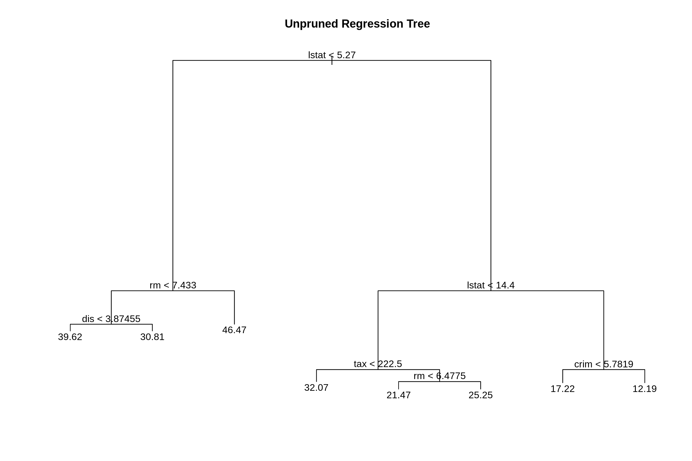
As with classification trees, we can use cross-validation to select a good pruning of the tree.
set.seed(18)
boston_tree_cv = cv.tree(boston_tree)
plot(boston_tree_cv$size, sqrt(boston_tree_cv$dev / nrow(boston_trn)), type = "b",
xlab = "Tree Size", ylab = "CV-RMSE")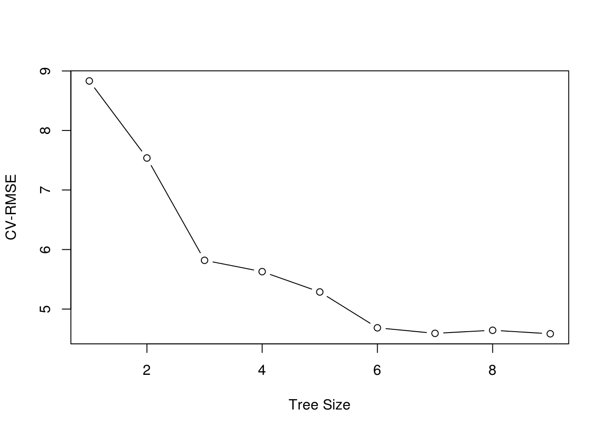
While the tree of size 9 does have the lowest RMSE, we’ll prune to a size of 7 as it seems to perform just as well. (Otherwise we would not be pruning.) The pruned tree is, as expected, smaller and easier to interpret.
boston_tree_prune = prune.tree(boston_tree, best = 7)
summary(boston_tree_prune)##
## Regression tree:
## snip.tree(tree = boston_tree, nodes = c(11L, 8L))
## Variables actually used in tree construction:
## [1] "rm" "lstat" "crim"
## Number of terminal nodes: 7
## Residual mean deviance: 14.05 = 3455 / 246
## Distribution of residuals:
## Min. 1st Qu. Median Mean 3rd Qu. Max.
## -13.60000 -2.12000 0.01731 0.00000 1.88000 28.02000plot(boston_tree_prune)
text(boston_tree_prune, pretty = 0)
title(main = "Pruned Regression Tree")
Let’s compare this regression tree to an additive linear model and use RMSE as our metric.
rmse = function(actual, predicted) {
sqrt(mean((actual - predicted) ^ 2))
}We obtain predictions on the train and test sets from the pruned tree. We also plot actual vs predicted. This plot may look odd. We’ll compare it to a plot for linear regression below.
# training RMSE two ways
sqrt(summary(boston_tree_prune)$dev / nrow(boston_trn))## [1] 3.695598boston_prune_trn_pred = predict(boston_tree_prune, newdata = boston_trn)
rmse(boston_prune_trn_pred, boston_trn$medv)## [1] 3.695598# test RMSE
boston_prune_tst_pred = predict(boston_tree_prune, newdata = boston_tst)
rmse(boston_prune_tst_pred, boston_tst$medv)## [1] 5.331457plot(boston_prune_tst_pred, boston_tst$medv, xlab = "Predicted", ylab = "Actual")
abline(0, 1)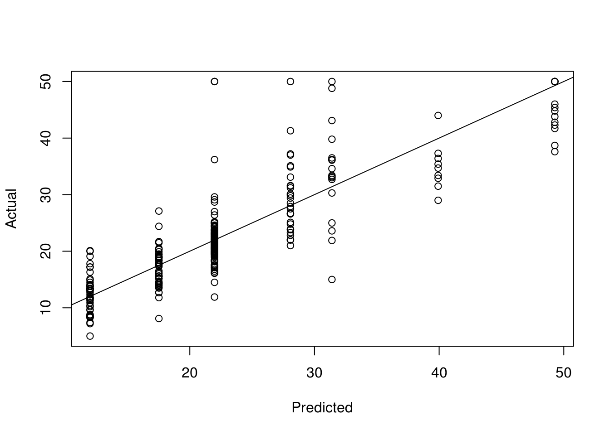
Here, using an additive linear regression the actual vs predicted looks much more like what we are used to.
bostom_lm = lm(medv ~ ., data = boston_trn)
boston_lm_pred = predict(bostom_lm, newdata = boston_tst)
plot(boston_lm_pred, boston_tst$medv, xlab = "Predicted", ylab = "Actual")
abline(0, 1)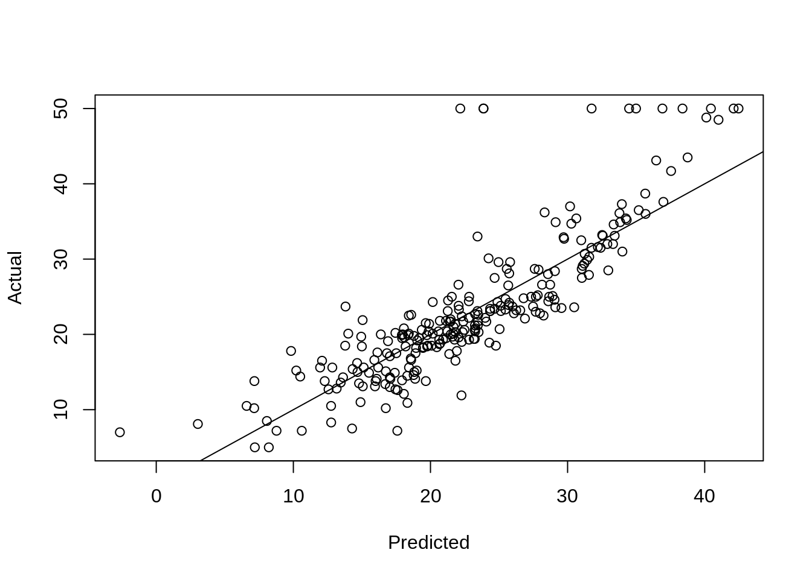
rmse(boston_lm_pred, boston_tst$medv)## [1] 5.125877We also see a lower test RMSE. The most obvious linear regression beats the tree! Again, we’ll improve on this tree soon. Also note the summary of the additive linear regression below. Which is easier to interpret, that output, or the small tree above?
coef(bostom_lm)## (Intercept) crim zn indus chas
## 43.340158284 -0.113490889 0.046881038 0.018046856 3.557944155
## nox rm age dis rad
## -21.904534125 3.486780787 -0.010592511 -1.766227892 0.354167931
## tax ptratio black lstat
## -0.015036451 -0.830144898 0.003722857 -0.57613420026.3 rpart Package
The rpart package is an alternative method for fitting trees in R. It is much more feature rich, including fitting multiple cost complexities and performing cross-validation by default. It also has the ability to produce much nicer trees. Based on its default settings, it will often result in smaller trees than using the tree package. See the references below for more information. rpart can also be tuned via caret.
library(rpart)
set.seed(430)
# Fit a decision tree using rpart
# Note: when you fit a tree using rpart, the fitting routine automatically
# performs 10-fold CV and stores the errors for later use
# (such as for pruning the tree)
# fit a tree using rpart
seat_rpart = rpart(Sales ~ ., data = seat_trn, method = "class")
# plot the cv error curve for the tree
# rpart tries different cost-complexities by default
# also stores cv results
plotcp(seat_rpart)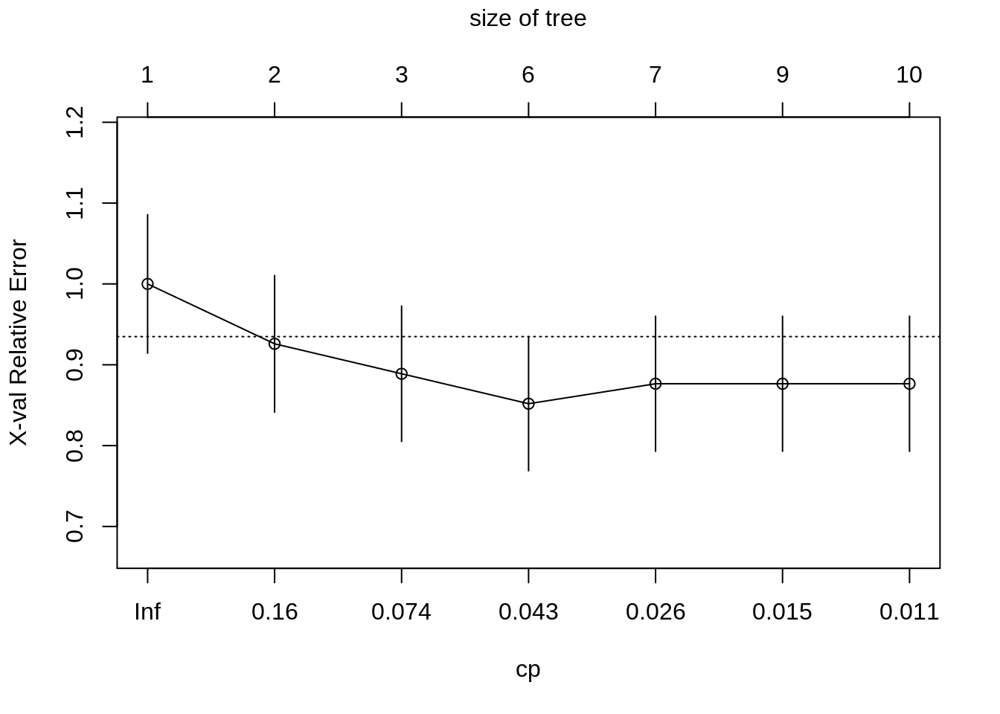
# find best value of cp
min_cp = seat_rpart$cptable[which.min(seat_rpart$cptable[,"xerror"]),"CP"]
min_cp## [1] 0.02083333# prunce tree using best cp
seat_rpart_prune = prune(seat_rpart, cp = min_cp)
# nicer plots
library(rpart.plot)
prp(seat_rpart_prune)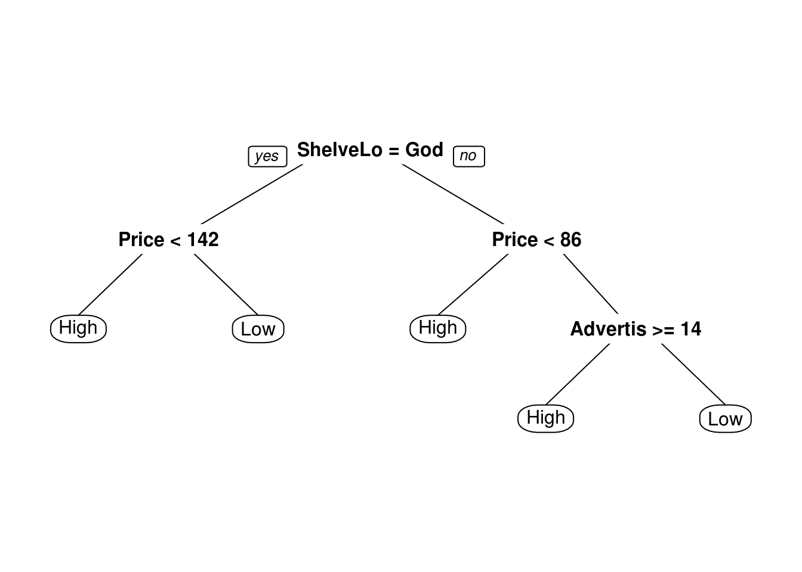
prp(seat_rpart_prune, type = 4)
rpart.plot(seat_rpart_prune)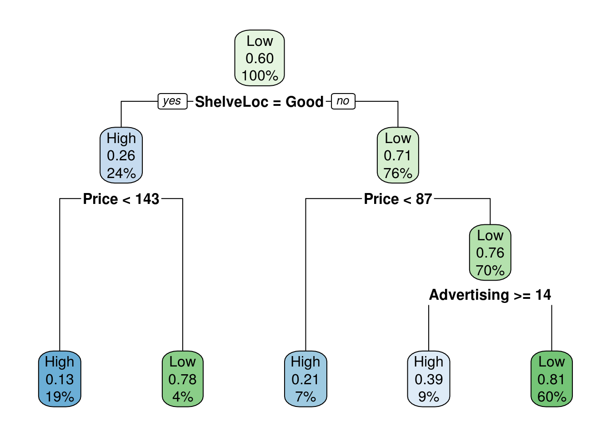
26.4 External Links
- An Introduction to Recursive Partitioning Using the
rpartRoutines - Details of therpartpackage. rpart.plotPackage - Detailed manual on plotting withrpartusing therpart.plotpackage.
26.5 rmarkdown
The rmarkdown file for this chapter can be found here. The file was created using R version 3.4.4. The following packages (and their dependencies) were loaded when knitting this file:
## [1] "rpart.plot" "rpart" "MASS" "ISLR" "tree"